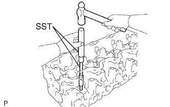
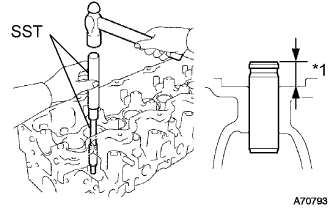
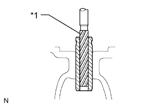
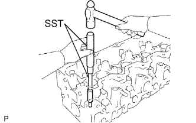
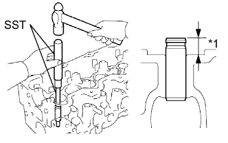
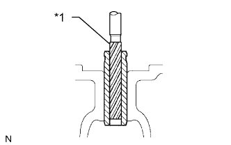

ГОЛОВКА БЛОКА ЦИЛИНДРОВ > ЗАМЕНА |
| 1. REPLACE INTAKE VALVE GUIDE BUSH |
Gradually heat the cylinder head to approximately 80 to 100°C (176 to 212°F).
|  |
Using SST and a hammer, tap out the valve guide bush.
Using a caliper gauge, measure the bush bore diameter of the cylinder head.
Select a new guide bush.
| Item | Specified Conditions | |
| Bush Bore Diameter | 13.004 to 13.025 mm (0.512 to 0.513 in.) | 13.054 to 13.075 mm (0.514 to 0.515 in.) |
| Bush to be Used | STD | O/S 0.05 |
Gradually heat the cylinder head to approximately 80 to 100°C (176 to 212°F).
|  |
Using SST and a hammer, tap in a new guide bush to the specified protrusion height.
| *1 | Protrusion Height |
|  |
Using a sharp 8.0 mm reamer, ream the guide bush to obtain the specified clearance (See page Нажмите здесь).
| *1 | Reamer |
| 2. REPLACE EXHAUST VALVE GUIDE BUSH |
Gradually heat the cylinder head to approximately 80 to 100°C (176 to 212°F).
|  |
Using SST and a hammer, tap out the valve guide bush.
Using a caliper gauge, measure the bush bore diameter of the cylinder head.
Select a new guide bush.
| Item | Specified Conditions | |
| Bush Bore Diameter | 13.004 to 13.025 mm (0.512 to 0.513 in.) | 13.054 to 13.075 mm (0.514 to 0.515 in.) |
| Bush to be Used | STD | O/S 0.05 |
Gradually heat the cylinder head to approximately 80 to 100°C (176 to 212°F).
|  |
Using SST and a hammer, tap in a new guide bush to the specified protrusion height.
| *1 | Protrusion Height |
|  |
Using a sharp 8.0 mm reamer, ream the guide bush to obtain the specified clearance (See page Нажмите здесь).
| *1 | Reamer |
| 3. REPLACE TIGHT PLUG |
Apply adhesive to new tight plugs.
Install the tight plugs as shown in the illustration.
| *a | Front Side | *b | Cylinder Head Cover Side |
| *c | Rear Side | *d | Intake Manifold Side |
| *e | Stops | - | - |
Using SST, tap in the 7 tight plugs labeled A.
Using SST, tap in the tight plug labeled B.
Using SST, tap in the 2 tight plugs labeled C.
| 4. REPLACE RING PIN |
Using a plastic-faced hammer, tap in a new ring pin until it stops.
| *1 | Height | *2 | Diameter |
| *a | Front Side | *b | Cylinder Head Cover Side |
| *c | Until pin stop | - | - |
| Item | Height | Diameter |
| Ring pin | 8 mm (0.315 in.) | 11 mm (0.433 in.) |